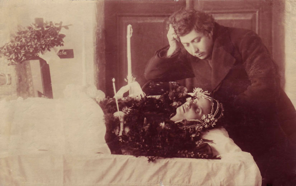
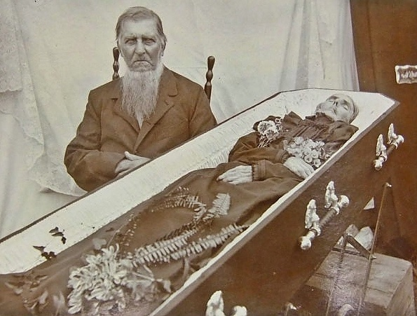

Post-Mortem photography
before the online


Back in Victorian times people most people in middle class did not have any picture of them being taken during their lives. When a person had died people suddenly felt the urge to eternalize their passed away beloved ones. It was now or never. Deceased ones got dressed up as if they were still alive. Systems were build to keep their body’s straight. People pose with them as if it was a normal day in their lives. You could state that to prove you have lived you first have to die.

Joie de vivre..